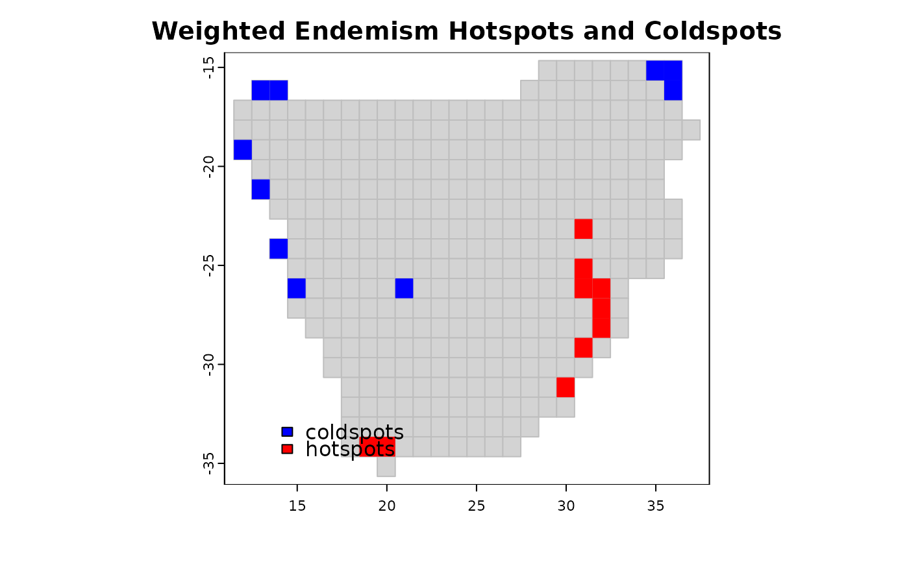

coldspots and hotspots map areas or grid cells with lowest
or highest values, respectively, of a biodiversity metric e.g.
species richness, species endemism or degree of threat.
coldspots(x, prob = 2.5, na.rm = TRUE, ...)
hotspots(x, prob = 2.5, na.rm = TRUE, ...)a vector on which to compute coldspots
The threshold quantile for representing the lowest
(coldspots) or highest (hotspots) proportion of biodiversity in
an area. By default, the threshold is set to prob = 2.5 percent.
logical; if true, any NA and NaN's are removed from x before the quantiles are computed.
Further arguments passed to or from other methods.
A vector of integers of 1s and 0s with 1 corresponding to the coldspots or hotspots
Myers, M., Mittermeier, R.A., Mittermeier, C.G., da Fonseca, G.A.B. & Kent, J. (2000) Biodiversity hotspots for conservation priorities. Nature 403: 853–858.
Ceballos, G. & Ehrlich, P.R. (2006) Global mammal distributions, biodiversity hotspots, and conservation. Proceedings of the National Academy of Sciences USA 103: 19374–19379.
Orme, C.D., Davies, R.G., Burgess, M., Eigenbrod, F., Pickup, N. et al. (2005) Global hotspots of species richness are not congruent with endemism or threat. Nature 436: 1016–1019.
Daru, B.H., Van der Bank, M. & Davies, T.J. (2015) Spatial incongruence among hotspots and complementary areas of tree diversity in southern Africa. Diversity and Distributions 21: 769-780.
library(terra)
data(africa)
p <- vect(system.file("ex/sa.json", package = "phyloregion"))
Endm <- weighted_endemism(africa$comm)
C <- coldspots(Endm) # coldspots
H <- hotspots(Endm) # hotspots
## Merge endemism values to shapefile of grid cells.
DF <- data.frame(grids=names(C), cold=C, hot=H)
m <- merge(p, DF, by = "grids", all = TRUE)
plot(p, border = "grey", col = "lightgrey",
main = "Weighted Endemism Hotspots and Coldspots")
plot(m[(m$cold == 1), ], col = "blue", add = TRUE, border = NA)
plot(m[(m$hot == 1), ], col = "red", add = TRUE, border = NA)
legend("bottomleft", fill = c("blue", "red", "yellow", "green"),
legend = c("coldspots", "hotspots"), bty = "n", inset = .092)
